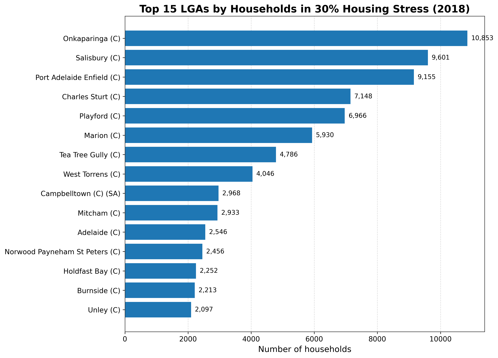
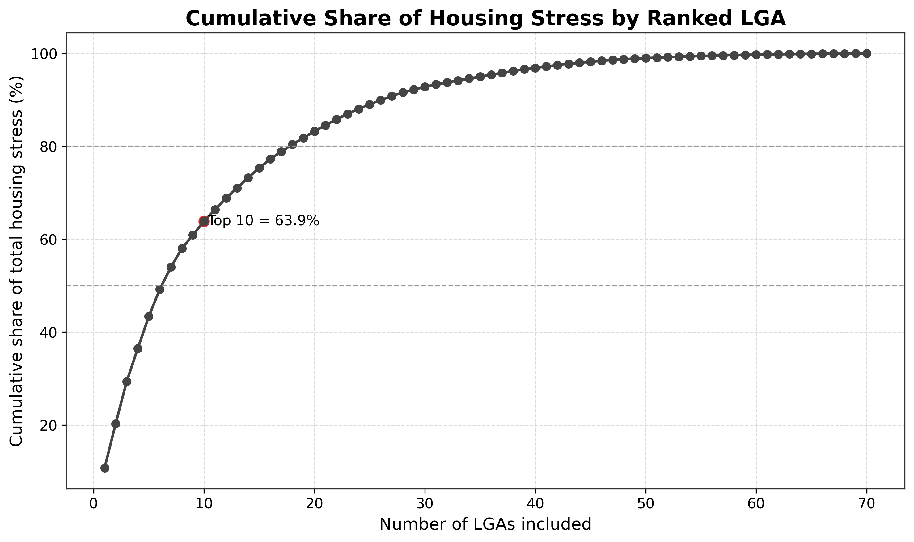
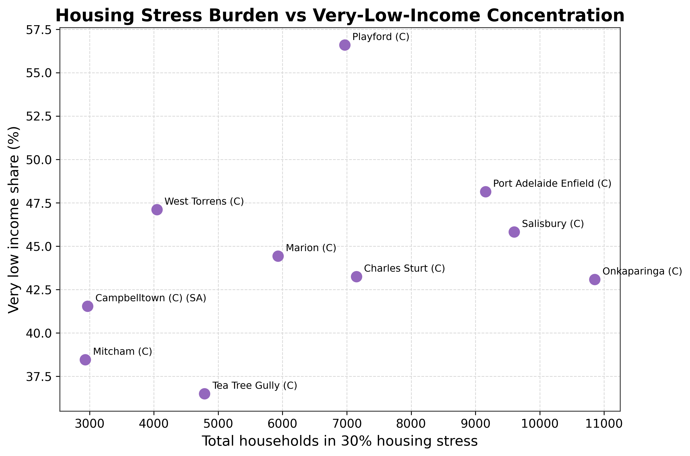

CFD & Computational Hemodynamics
Transient flow modelling, hemodynamic metrics, aortic morphology studies, boundary-condition design, verification, and publication-quality interpretation.
CFD • Computational Hemodynamics • Data Analysis • Applied AI
I work across cardiovascular CFD, quantitative analysis, and practical AI tooling — turning technically heavy workflows into reproducible pipelines, clear evidence, and usable engineering systems.
About
My background combines mechanical engineering, cardiovascular CFD, scientific programming, biomedical research, and analytical reporting. I care about two things: technical rigor and practical usefulness.
That means building reproducible workflows, documenting assumptions well, turning raw outputs into interpretable evidence, and designing systems that reduce wasted effort.
The goal is not just to generate results. The goal is to make complex technical work trustworthy, explainable, and useful to the people making decisions from it.
Core domains
This structure keeps the portfolio sharp: simulation depth, analytical interpretation, and tool building.
Transient flow modelling, hemodynamic metrics, aortic morphology studies, boundary-condition design, verification, and publication-quality interpretation.
Turning complex datasets into structured findings through cleaning, comparison, concentration analysis, visual storytelling, and model-oriented thinking.
Building tools and workflows that reduce manual effort, improve repeatability, and make technical knowledge easier to access and use.
Selected work
Organised by domain so the site feels intentional rather than like a random stack of cards.
Category 01
Cardiovascular research
Simulation-driven studies of healthy and diseased aortic flow, focusing on wall shear stress, helicity, flow efficiency, morphology effects, and clinically relevant interpretation.
Pipeline design
A structured workflow for geometry preparation, meshing, solver setup, and reproducible post-processing for cardiovascular simulation studies.
Category 02
Featured case study
An evidence-led analysis of South Australian housing-stress data designed to show where affordability pressure is concentrated, which income groups are most exposed, and how tenure type shapes the burden. The case study turns a public dataset into a clean, policy-facing story with clear definitions, figure-by-figure interpretation, and portfolio-quality presentation.

fig01_top15_lgas_clean.png
Drop the real chart into the housing-stress figures folder and it will appear automatically.

fig05_cumulative_share_lgas.png
This preview card becomes the real figure as soon as the PNG exists in the expected folder.

fig06_vulnerability_scatter.png
The homepage is already wired to the exact filenames, so no extra editing is needed later.
Category 03
AI assistant concept
An AI tool designed to explain CFD fundamentals and provide step-by-step task guidance for Fluent users in practical engineering workflows.
Healthcare tool direction
A direction focused on combining imaging-derived data, simulation outputs, and intelligent tooling to support clinically useful cardiovascular analysis.
Workflow automation
A broader automation philosophy for turning technical outputs into clean figures, consistent summaries, and decision-ready reporting with less manual repetition.
Professional profile
A detailed summary of my research, technical experience, publications, awards, and teaching background.
Contact
Research collaboration, engineering automation, AI tools, data work, or a sharp technical conversation.